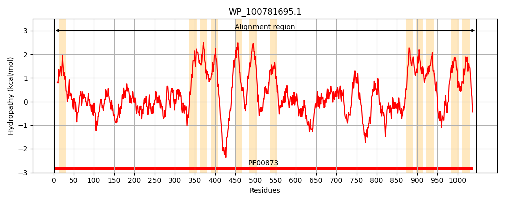
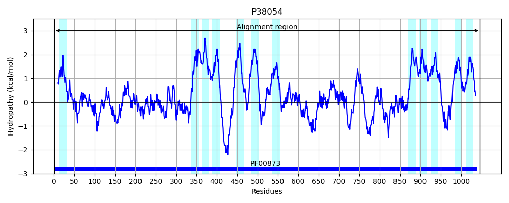
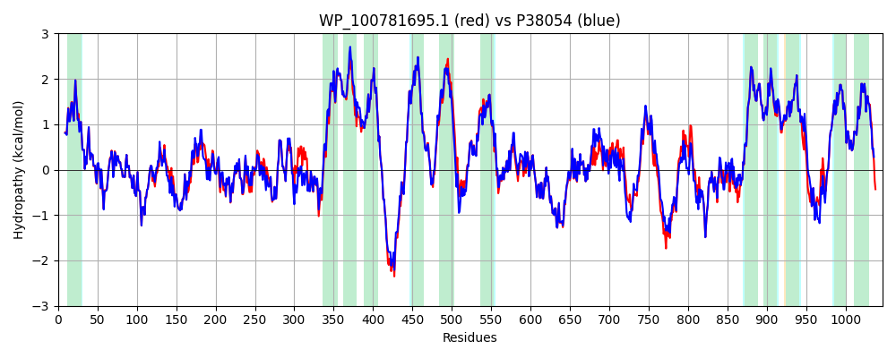

Hit Accession: P38054
Hit TCID: 2.A.6.1.4
Hit Description: gnl|BL_ORD_ID|10154 gnl|TC-DB|P38054|2.A.6.1.4 Putative cation efflux system protein cusA - Escherichia coli.
Mach Len: 1047
e:0.000000
Query TMS Count : 12
Hit TMS Count: 12
TMS-Overlap Score: 11.250000
Predicted Substrates:CHEBI:49551;copper(1+), CHEBI:49468;silver(1+)
BLAST Alignment:
Score: 4844 , Bit scores: 1870 bits, E-value: 0.0e+00, Alignment length: 1047, Percentage identity: 90
Query: 1 MIEWIIRRSVANRFLVMMAALFLSIWGTWTIVHTPVDALPDLSDVQVIVKTSYPGQAPQIVENQVTWPLTTTMLSVPGAKTVRGFSQFGDSYVYVIFEDGTDPYWARSRVLEYLNQVQGKLPAGVSAEMGPDATGVGWVFEYALVDRSGKHDLAELRSLQDWFLKYELKTIPNVSEVASVGGVVKEYQIVVDPMKLTQYGISLGEVKSALDASNQEAGGSSVELAEAEYMVRASGYLQTLDDFKNIVLKTGDNGVPVYLGDVARVQIGPEMRRGIAELNGEGEVAGGVVILRSGKNAREVISAVKAKLASLQSSLPEGVEVVTTYDRSQLIDRAIDNLSHKLLEEFIVVALVCALFLWHVRSALVAIISLPLGLCFAFIMMHFQGLNANIMSLGGIAIAVGAMVDAAIVMIENAHKRLEEWEHQHPGEKLSNDTRWKIITEASVEVGPALFISLLIITLSFIPIFTLEGQEGKLFGPLAFTKTWSMAGAALLAIVVIPILMGFWIRGRIPAESSNPLNRFLIRIYHPLLLKVLHWPKTTLLIALLSILTVAWPLNRVGGEFLPQINEGDLLYMPSTLPGISAAQAADMLQKTDKLIMTVPEVARVFGKTGKAETATDSAPLEMVETTIQLKPQDQWRPGMTMEKIVEELDKTVRLPGLANLWVPPIRNRIDMLSTGIKSPIGIKVSGTNLADIDAIAEQIEGVARTVPGVTSALAERLVGGRYLNIDIQREKAARYGMTVGDVQLFVSSAIGGAMVGETVEGVERYPINIRYPQSYRDSPETLRQLPILTPLKQQIVLGDVAEVKVVTGPSMLKTENARPTSWIYIDARDRDMVSVVHDLQQAIGKEVKLKPGISVSYSGQFELLERANQKLKLMVPMTLMIIFVLLYLAFRRVGEALLIITSVPFALVGGIWFLYWMGFHLSVATGTGFIALAGVAAEFGVVMLMYLRHAIEAEPSLENPQTFSVDKLDEALYQGAVLRVRPKAMTVAVIIAGLLPILWGTGAGSEVMSRIAAPMIGGMITAPLLSLFIIPAAYKLMWLSRHRGKR 1047
MIEWIIRRSVANRFLV+M ALFLSIWGTWTI++TPVDALPDLSDVQVI+KTSYPGQAPQIVENQVT+PLTTTMLSVPGAKTVRGFSQFGDSYVYVIFEDGTDPYWARSRVLEYLNQVQGKLPAGVSAE+GPDATGVGW++EYALVDRSGKHDLA+LRSLQDWFLKYELKTIP+V+EVASVGGVVKEYQ+V+DP +L QYGISL EVKSALDASNQEAGGSS+ELAEAEYMVRASGYLQTLDDF +IVLK +NGVPVYL DVA+VQIGPEMRRGIAELNGEGEVAGGVVILRSGKNAREVI+AVK KL +L+SSLPEGVE+VTTYDRSQLIDRAIDNLS KLLEEFIVVA+VCALFLWHVRSALVAIISLPLGLC AFI+MHFQGLNANIMSLGGIAIAVGAMVDAAIVMIENAHKRLEEW+HQHP L N TRW++IT+ASVEVGPALFISLLIITLSFIPIFTLEGQEG+LFGPLAFTKT++MAGAALLAIVVIPILMG+WIRG+IP ESSNPLNRFLIR+YHPLLLKVLHWPKTTLL+A LS+LTV WPLN+VGGEFLPQINEGDLLYMPSTLPGISAA+AA MLQKTDKLIM+VPEVARVFGKTGKAETATDSAPLEMVETTIQLKPQ+QWRPGMTM+KI+EELD TVRLPGLANLWVPPIRNRIDMLSTGIKSPIGIKVSGT LADIDA+AEQIE VARTVPGV SALAERL GGRY+N++I REKAARYGMTV DVQLFV+SA+GGAMVGETVEG+ RYPIN+RYPQS+RDSP+ LRQLPILTP+KQQI L DVA++KV TGPSMLKTENARPTSWIYIDARDRDMVSVVHDLQ+AI ++V+LKPG SV++SGQFELLERAN KLKLMVPMTLMIIFVLLYLAFRRVGEALLII+SVPFALVGGIW L+WMGFHLSVATGTGFIALAGVAAEFGVVMLMYLRHAIEA PSL NPQTFS KLDEALY GAVLRVRPKAMTVAVIIAGLLPILWGTGAGSEVMSRIAAPMIGGMITAPLLSLFIIPAAYKLMWL RHR ++
Sbjct: 1 MIEWIIRRSVANRFLVLMGALFLSIWGTWTIINTPVDALPDLSDVQVIIKTSYPGQAPQIVENQVTYPLTTTMLSVPGAKTVRGFSQFGDSYVYVIFEDGTDPYWARSRVLEYLNQVQGKLPAGVSAELGPDATGVGWIYEYALVDRSGKHDLADLRSLQDWFLKYELKTIPDVAEVASVGGVVKEYQVVIDPQRLAQYGISLAEVKSALDASNQEAGGSSIELAEAEYMVRASGYLQTLDDFNHIVLKASENGVPVYLRDVAKVQIGPEMRRGIAELNGEGEVAGGVVILRSGKNAREVIAAVKDKLETLKSSLPEGVEIVTTYDRSQLIDRAIDNLSGKLLEEFIVVAVVCALFLWHVRSALVAIISLPLGLCIAFIVMHFQGLNANIMSLGGIAIAVGAMVDAAIVMIENAHKRLEEWQHQHPDATLDNKTRWQVITDASVEVGPALFISLLIITLSFIPIFTLEGQEGRLFGPLAFTKTYAMAGAALLAIVVIPILMGYWIRGKIPPESSNPLNRFLIRVYHPLLLKVLHWPKTTLLVAALSVLTVLWPLNKVGGEFLPQINEGDLLYMPSTLPGISAAEAASMLQKTDKLIMSVPEVARVFGKTGKAETATDSAPLEMVETTIQLKPQEQWRPGMTMDKIIEELDNTVRLPGLANLWVPPIRNRIDMLSTGIKSPIGIKVSGTVLADIDAMAEQIEEVARTVPGVASALAERLEGGRYINVEINREKAARYGMTVADVQLFVTSAVGGAMVGETVEGIARYPINLRYPQSWRDSPQALRQLPILTPMKQQITLADVADIKVSTGPSMLKTENARPTSWIYIDARDRDMVSVVHDLQKAIAEKVQLKPGTSVAFSGQFELLERANHKLKLMVPMTLMIIFVLLYLAFRRVGEALLIISSVPFALVGGIWLLWWMGFHLSVATGTGFIALAGVAAEFGVVMLMYLRHAIEAVPSLNNPQTFSEQKLDEALYHGAVLRVRPKAMTVAVIIAGLLPILWGTGAGSEVMSRIAAPMIGGMITAPLLSLFIIPAAYKLMWLHRHRVRK 1047 | Protein Hydropathy Plots: | |
|---|---|
|  |  |
Pairwise Alignment-Hydropathy Plot: | |
|  | |